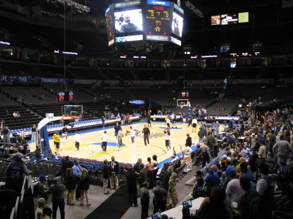
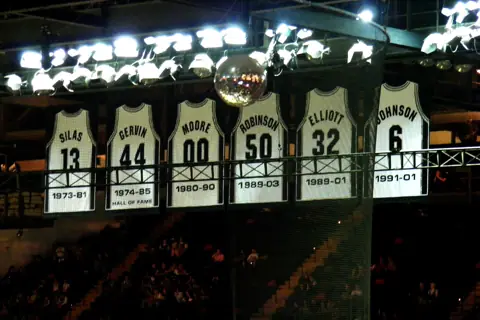
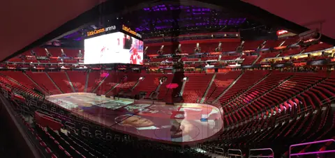
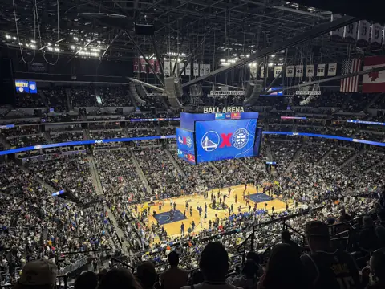
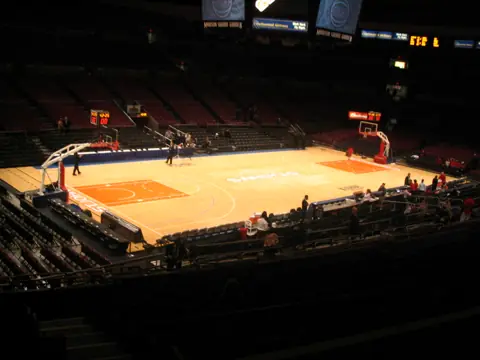
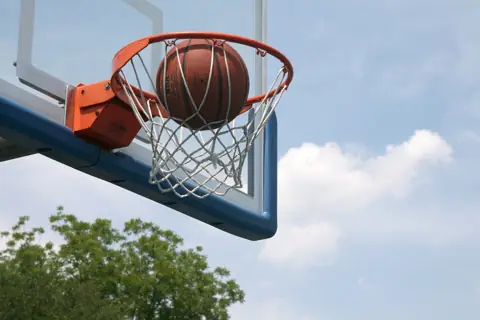
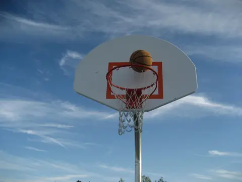
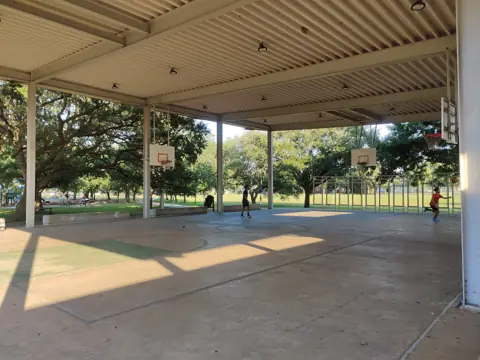
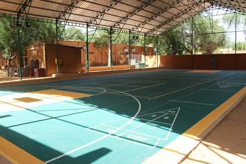

Sezon NBA 2025/26 w liczbach
Interaktywne podsumowanie sezonu zasadniczego na podstawie oficjalnych statystyk ligi.
Wyścig sezonu
Jak zmieniał się bilans zwycięstw drużyn w trakcie sezonu. Wybierz drużyny i okres, który chcesz porównać.
Zawodnicy
Porównanie najlepszych strzelców sezonu.
Mapa rzutów
Skąd i jak skutecznie rzucali najlepsi zawodnicy ligi.
rzut celny rzut niecelny
Heatmapa: kolor pola = skuteczność, 30%60%; pola z co najmniej 3 rzutami.
Klawiatura (po zaznaczeniu mapy klawiszem Tab): ← → zawodnik, 0–4 kwarta (0 = wszystkie), 5 dogrywki, H heatmapa.
Nasz mecz 3×3
Skrót naszego meczu z tablicą wyników zsynchronizowaną z filmem.
Galeria
Hale drużyn z czołówki sezonu i boiska. Kliknij zdjęcie, żeby je powiększyć.
-

Oklahoma City: rozgrzewka Thunder przed meczem
-

San Antonio: zastrzeżone numery Spurs pod dachem hali
-

Detroit: Little Caesars Arena, hala Pistons
-

Denver: Ball Arena przed meczem Nuggets
-

Nowy Jork: parkiet Madison Square Garden
-

Piłka w obręczy
-

Jeszcze chwila… piłka nad koszem
-

Zadaszone boisko w parku
-

Boisko wielofunkcyjne pod dachem


Autorzy i licencje zdjęć
Zdjęcia z Wikimedia Commons, przeskalowane i zapisane w formacie WebP (zmiana formatu i rozmiaru).
- Oklahoma City: rozgrzewka Thunder przed meczem: fot. DrJohnBecker, CC BY-SA 3.0, Wikimedia Commons
- San Antonio: zastrzeżone numery Spurs pod dachem hali: fot. aaron vazquez, CC BY 2.0, Wikimedia Commons
- Detroit: Little Caesars Arena, hala Pistons: fot. Coreyfein01, CC BY-SA 4.0, Wikimedia Commons
- Denver: Ball Arena przed meczem Nuggets: fot. MhcL947, CC BY-SA 4.0, Wikimedia Commons
- Nowy Jork: parkiet Madison Square Garden: fot. Ganley894, domena publiczna, Wikimedia Commons
- Piłka w obręczy: fot. Ildar Sagdejev, CC BY-SA 4.0, Wikimedia Commons
- Jeszcze chwila… piłka nad koszem: fot. Marcus Quigmire, CC BY-SA 2.0, Wikimedia Commons
- Zadaszone boisko w parku: fot. EvanCarroll, CC BY-SA 4.0, Wikimedia Commons
- Boisko wielofunkcyjne pod dachem: fot. Jeffduckett, CC BY-SA 4.0, Wikimedia Commons


.jpg){kind=link}


O projekcie
Źródła danych, licencje i autorzy.